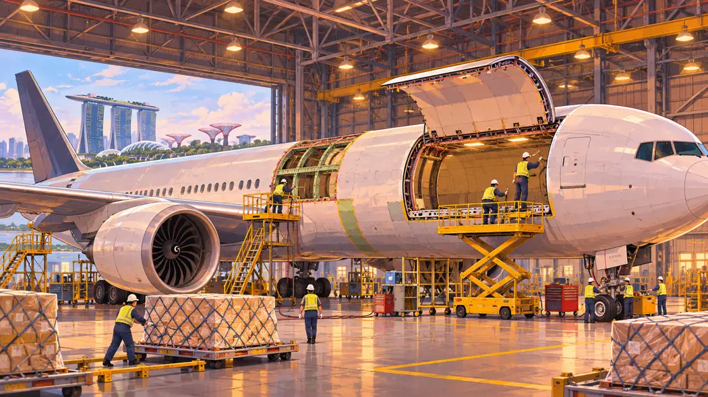

항공 화물 / EXPLAINED
여객기 767의 두 번째 일자리, 아이슬리스가 화물기 개조를 택한 이유
보잉과 아이슬리스가 767 한 대를 화물기로 개조하기로 했다. 추가 두 대는 옵션으로 남겨뒀다.

계약서에서 확정된 숫자는 한 대다
보잉은 11월 2일 항공기 리스 회사 아이슬리스와 767-300 여객기 한 대의 화물기 개조에 합의했다고 밝혔다. 두 대를 더 맡길 수 있는 옵션도 포함됐다. 서명 행사는 10월 22일 열렸다. 발표일과 계약을 기념한 행사가 열렸던 날이 다르다.
여객기에서 화물기로
BCF는 Boeing Converted Freighter의 약자다. 이미 제작된 여객기를 바탕으로, 주 객실에 화물을 싣고 고정할 수 있게 바꾸는 방식이다. 큰 화물 출입문과 적재 구조가 필요한 이유다. 이 기종에 대해 보잉은 화물 57톤을 싣고 3,300해리(약 6,110km)를 비행할 수 있다고 제시한다. 실제 운항 계획에는 날씨와 예비 연료 등 별도 조건이 반영된다.
개조는 싱가포르에서
첫 기체는 2027년 1분기 싱가포르의 ST엔지니어링 시설에 들어가고 2분기 인도가 예상된다. 리스사 입장에서는 한 대를 먼저 확보한 뒤 수요에 따라 추가 물량을 결정할 여지가 있다. 화주가 이용할 수 있는 노선이나 운항사는 이번 발표에서 제시되지 않았다.